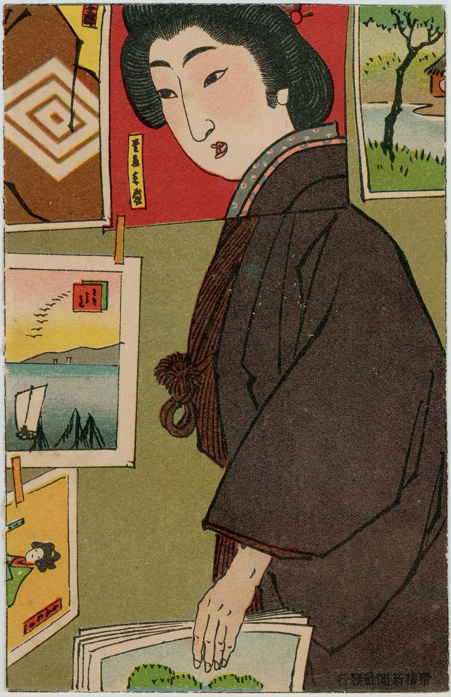
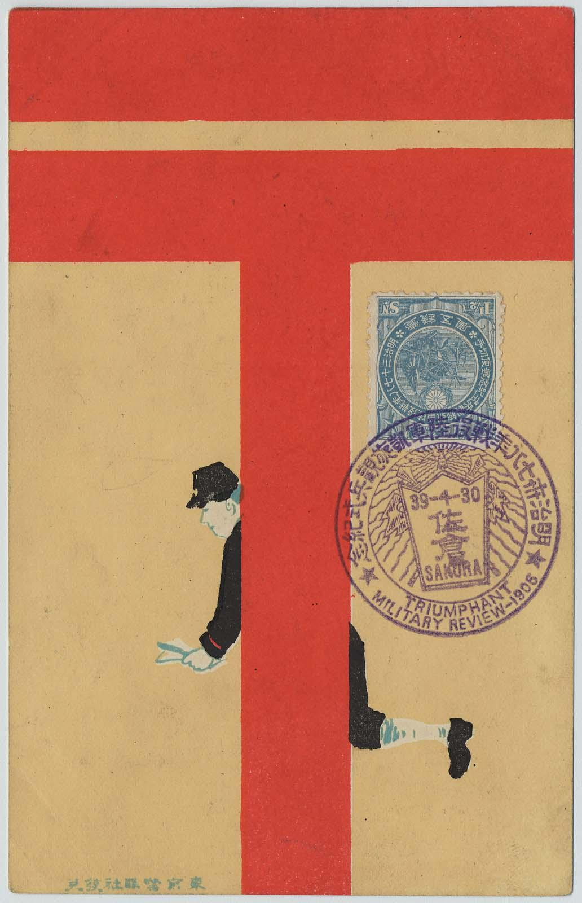
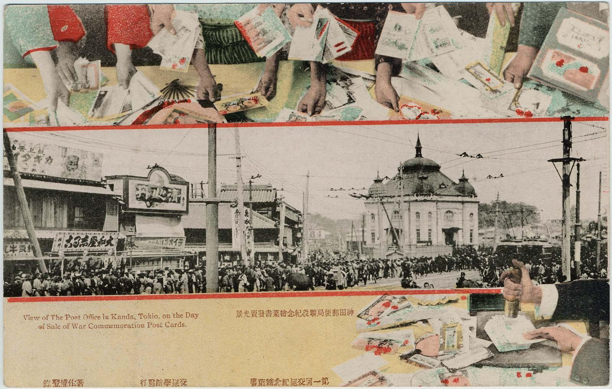

CLIENT IN A PRINT SHOP
Unnamed Artist
From collection Ehagaki sekai
Postcard
1908

Unnamed Artist
From collection Ehagaki sekai
Postcard
1908
*Specific aspects in postcard history such as the Russo-Japanese War and Art Nouveau and Deco Movements are further explored in a set of chapters available in the full text
With the establishment of the Japanese national postal service in 1871, the general populace began to send personal communciations. No longer was mail reserved for the military elite who had controlled the official horse-relay system from their seat of power in Edo (modern-day Tokyo) to the provinces,
nore was it reserved for the wealthy merchants who had formed their own courier system between the cities of Osaka, Kyoto, and Edo. Based on the British system, the new service, with its relays of runners, rapidly permitted ordinary citizens to send letters throughout the country. By 1877, Japan had joined
the Universal Postal Union, facilitating mail delivery to and from Europe and the United states.
The postcard format was first developed by the Austro, Hungarian government in 1869 and was almost immediately adopted by other European countries. On December 1, 1873, the Japanese government also began issuing
official nonillustrated postcards on thin, folded paper with simple decorative borders, and by 1878 agreed to follow the standards specific to cards established by the Universal Post Union. From that time cards measured 8.8 by 13.8 centimeters, with one side reserved for any illustration or text.

Unnamed Artist
1905

Unnamed Artist
Postcard
1906
During the late 1890s, small illustrations, such as hand-colored photographs, were introduced on the fronts of official cards.
By 1887, postcards had become the most popular form of mail in Japan. This status only increased with the sanctioning of privately published cards in 1900. Within a few years postcards of all types were offered in shops, displacing the establishments that had once sold woodblock prints.
While some careds were quite inexpensive, others were more aesthetic, even luxurious productions. Publishing houses in Tokyo, such as Hakubunkan and Shun'yōdō, issued sets of such cards. In addition Hakubunkan included tear-out postcard supplements in its popular journals Chūgaku sekai
(World of Middle School Students), and Jogaku sekai (World of Female Students), and a member of its founding fmaily estbalished the Japan Postcard Assocation and published issues of Hagaki bungaku (Literature of Postcards) in 1904. Many of the leading artists of the day, trained in
a variety of genres, along with graphic designers, were comissioned to create innovative postcard compositions. Printing houses employed exciting new techniques recently introduced from the West. that facilitated the mass production of multicolored images...
*Read more in the full text